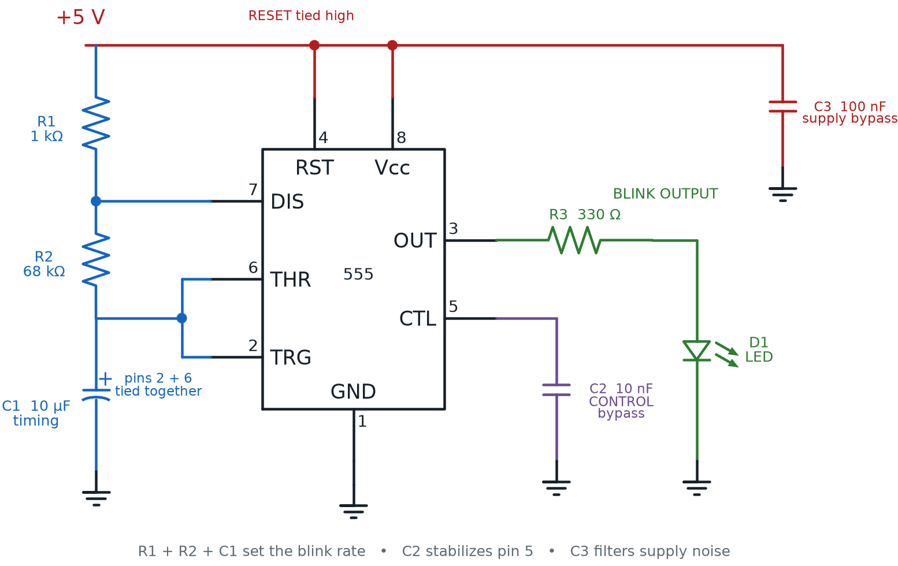

The 555 Timer Chip
Summary
This chapter introduces the classic 555 timer IC — its pin configuration and its astable and monostable modes — for building circuits that blink an LED or sound a buzzer on a schedule the student designs.
Concepts Covered
This chapter covers the following 21 concepts from the learning graph:
- Clock Signal
- Latch Signal
- IC Pin Numbering
- IC Notch Orientation
- Base Resistor
- Transistor Pinout
- Transistor Schematic Symbol
- TO-92 Package
- Transistor Turn-On Voltage
- Transistor Gain Rating
- Transistor Heat Limit
- Darlington Pair
- Transistor Motor Driver
- 555 Trigger Pin
- 555 Threshold Pin
- 555 Discharge Pin
- 555 Reset Pin
- 555 Control Voltage Pin
- 555 Output Pin
- 555 Duty Cycle
- 555 Frequency Setting
Prerequisites
This chapter builds on concepts from:
- 1. Electricity Basics: Voltage, Current, and Resistance
- 2. Current, Charge, Units, and Electrical Safety
- 9. Resistors and Capacitors
- 10. Capacitor Timing and Resistor Values
- 13. Meet the Transistor
Chapter 13 met the transistor and, right at the very end, took a first peek at two chips waiting in the wings — the 555 timer and the 74HC595 shift register. That peek even included a table naming the 555's eight pins. This chapter is where those names finally get real jobs.
Before any pin-by-pin work happens, though, there's unfinished business. Chapter 13 explained what a transistor's base, collector, and emitter do. It never covered how to find those three leads on a real BC547 sitting in your kit, how to protect a transistor from its own heat, or how to team two transistors up for a job too big for one. Those are exactly the skills you need before wiring anything fun to a 555 — a blinking LED, a beeping buzzer, or a spinning motor. So that's where this chapter starts, before it circles back to the chip itself.
Three Fives and a Whole Lot of Blinking
 Welcome back, builder! This is the chapter a lot of electronics fans wait for — the one where things finally blink and beep on a schedule you design. First we finish turning your transistor knowledge into real wiring skills. Then we crack open the legendary 555 timer chip. Let's light it up!
Welcome back, builder! This is the chapter a lot of electronics fans wait for — the one where things finally blink and beep on a schedule you design. First we finish turning your transistor knowledge into real wiring skills. Then we crack open the legendary 555 timer chip. Let's light it up!
Reading a Real Transistor: Pinout, Package, and Symbol
Every transistor in this course's kit — the BC547 and the 2N2222 — ships in the same small plastic case. TO-92 package is the name for that case: a half-cylinder of black or gray plastic with one flat face, three metal legs sticking out the bottom, and no markings anywhere except a tiny printed part number. That flat face is your landmark. Every time you pick up a transistor, find the flat side first.
With the flat side facing you and the three legs pointing down, the transistor pinout for both the BC547 and the 2N2222 reads left to right: emitter, base, collector. That order — E, B, C — is worth memorizing, because it never changes for these two parts.
| Position (flat side facing you, legs pointing down) | Lead | Job |
|---|---|---|
| Left | Emitter | Larger current exits here |
| Middle | Base | Small control current enters here |
| Right | Collector | Larger current enters here |
Flat Side, Every Time
 Just like a diode's band or an LED's flat edge told you which way current could flow, a transistor's flat side tells you which lead is which. Get in the habit of turning every transistor so its flat side faces you before you push it into the breadboard.
Just like a diode's band or an LED's flat edge told you which way current could flow, a transistor's flat side tells you which lead is which. Get in the habit of turning every transistor so its flat side faces you before you push it into the breadboard.
A breadboard sketch shows where a transistor physically sits. A schematic diagram uses a symbol instead. The transistor schematic symbol draws a transistor as three straight lines meeting a vertical bar — the base — with a small arrow on the emitter line showing which way current flows. Chapter 13 already showed that an arrow pointing away from the base marks an NPN transistor, exactly like the ones in this course's kit. From now on, whenever a wiring diagram shows a transistor as a symbol instead of a photo, that arrow is your first clue to what family you're looking at.
Every transistor's base-emitter connection behaves a lot like the diodes from Chapter 12 — it only conducts once it's pushed past a minimum voltage. Transistor turn-on voltage is the minimum voltage, roughly 0.6 to 0.7 volts for silicon transistors like the BC547 and 2N2222, that must appear between the base and emitter before any base current — and therefore any collector current — can flow. Push less than that, and the transistor stays off no matter how patiently you wait.
Chapter 13 already showed that a small base current controls a much larger collector current, using the formula \( I_C = \beta \times I_B \). The transistor gain rating is just another name for that same \( \beta \) value, often printed on a datasheet as hFE, and it's the single spec you'll check most often when choosing a transistor for a job. A higher gain rating means a smaller base current can control the same collector current.
A transistor's gain rating only tells half the story of what it can safely handle, though. Every transistor converts a little electrical energy into heat whenever current flows through it, and every transistor has a transistor heat limit — a maximum amount of power it can turn into heat before the silicon inside is permanently damaged. That power is approximately the collector-emitter voltage times the collector current, so pushing more current through a transistor than its rating allows cooks it from the inside out, often with no visible warning until it's already too late.
No Smoke Alarm Required
 A transistor that exceeds its heat limit doesn't blink a warning light first — it just quietly fails, sometimes for good. Always check a transistor's maximum collector current and power rating before wiring it to a motor or a bank of LEDs, the same safety habit Chapter 12 taught you for an LED's current rating.
A transistor that exceeds its heat limit doesn't blink a warning light first — it just quietly fails, sometimes for good. Always check a transistor's maximum collector current and power rating before wiring it to a motor or a bank of LEDs, the same safety habit Chapter 12 taught you for an LED's current rating.
Sizing a Base Resistor So Nothing Gets Fried
Turn-on voltage, gain rating, and heat limit aren't three separate facts to memorize — they combine into one practical calculation every time you wire a transistor. A base resistor is the resistor placed between a control signal and a transistor's base, chosen specifically to limit the base current to a safe, useful value instead of letting it run wild.
Here's the logic, one step at a time. First, decide how much collector current the job needs — say, enough to light an LED or spin a small motor. Second, use the transistor's gain rating to figure out how little base current can produce that collector current. Third, size a resistor that limits the base current to exactly that value, given the voltage you're feeding it from.
Base Current from Desired Collector Current
where:
- \( I_B \) is the base current needed
- \( I_C \) is the collector current the job requires
- \( \beta \) is the transistor's gain rating
Base Resistor Value
where:
- \( R_B \) is the base resistor's value
- \( V_{in} \) is the control voltage feeding the base resistor
- \( V_{BE} \) is the transistor's turn-on voltage, about 0.7 V
- \( I_B \) is the base current calculated above
Try the math with real numbers. Say a 2N2222 needs to switch a small motor drawing 100 mA, fed by this course's typical 5 V supply. A careful builder sizes for the worst-case gain rating a real 2N2222 might have, not the best case — using 100 for \( \beta \) even though some parts test higher keeps the circuit working with every transistor in the bag. That gives \( I_B = 100 \text{ mA} / 100 = 1 \text{ mA} \), and then \( R_B = (5 - 0.7) / 0.001 = 4{,}300 \, \Omega \) — close enough to a standard 4.7 kΩ resistor to use it directly.
The Formula Does the Worrying For You
 That's three formulas landing back to back, and it's completely normal if the algebra feels like a lot. The habit that matters is smaller than the math: always calculate a base resistor instead of guessing one. The arithmetic just makes sure your guess would have been safe.
That's three formulas landing back to back, and it's completely normal if the algebra feels like a lot. The habit that matters is smaller than the math: always calculate a base resistor instead of guessing one. The arithmetic just makes sure your guess would have been safe.
More Muscle: The Darlington Pair
Sometimes a job needs a huge collector current, but the only control signal available is a tiny one — weaker than even a well-chosen base resistor can comfortably handle with a single transistor. A Darlington pair solves that by wiring two transistors together so the first transistor's emitter feeds directly into the second transistor's base, multiplying their gain ratings together instead of just adding them.
- A single BC547 with a gain rating of 100 needs 1 mA of base current to produce 100 mA of collector current
- Two BC547s wired as a Darlington pair, each with a gain rating of 100, multiply to an effective gain of \( 100 \times 100 = 10{,}000 \)
- That same 100 mA of collector current now needs only \( 100 \text{ mA} / 10{,}000 = 0.01 \text{ mA} \) — ten microamps — of base current
Two Transistors, One Bigger Job
 A Darlington pair is really just "the transistor amplification trick" applied twice in a row — the first transistor amplifies the tiny control current, and the second transistor amplifies that result again. The tradeoff: because current passes through two base-emitter junctions instead of one, a Darlington pair needs roughly 1.4 V to turn on instead of 0.7 V.
A Darlington pair is really just "the transistor amplification trick" applied twice in a row — the first transistor amplifies the tiny control current, and the second transistor amplifies that result again. The tradeoff: because current passes through two base-emitter junctions instead of one, a Darlington pair needs roughly 1.4 V to turn on instead of 0.7 V.
The Transistor Motor Driver Pattern
All of this pinout, base-resistor, and Darlington knowledge exists for a reason: it's exactly what you need before wiring a 555 timer to anything that draws real current. A 555 timer's output pin can only safely source or sink a couple hundred milliamps, and a spinning DC motor is both power-hungry and, worse, an inductive load — it stores energy in a magnetic field and fires a voltage spike backward the instant its current is switched off. That spike can damage a chip that's driving it directly.
The transistor motor driver pattern solves both problems at once: instead of wiring a motor straight to the 555's output pin, the 555 drives a base resistor, the base resistor drives a transistor's base, and the transistor's collector switches the motor's much larger current — using a separate, more robust supply if the motor needs one. A diode wired backward across the motor's terminals, the same one-way-valve part from Chapter 12, gives that voltage spike a safe path to dissipate instead of blasting back into the transistor.
Explore the whole pattern — base resistor, transistor, motor, and the Darlington-pair option — in the breadboard sim below.
Diagram: Transistor Motor Driver — Base Resistor and Darlington Pair Explorer
Transistor Motor Driver — Base Resistor and Darlington Pair Explorer
Type: microsim
sim-id: transistor-motor-driver-explorer
Library: p5.js
Status: Specified
Purpose: Let students size a base resistor for an NPN transistor switching a small DC motor, watch what happens when the resistor is too small (excess base current, heat-limit warning) or too large (motor doesn't reach full speed), and toggle between a single transistor and a Darlington pair to see the base-current savings.
Bloom Taxonomy: Apply (L3). Bloom Verb: calculate, demonstrate, compare.
Learning objective: Given a target motor current and a selected transistor (BC547 or 2N2222) or a Darlington pair of two BC547s, calculate a safe base resistor value using \( R_B = (V_{in} - V_{BE}) / I_B \) and \( I_B = I_C / \beta \), and observe the resulting base current, collector current, and heat-limit status.
Reuse check: An embeddings search (find-similar-templates, mode=reuse) for "Title: Transistor Motor Driver Breadboard Demo | Topic: NPN transistor switching a DC motor, base resistor sizing, transistor heat limit, Darlington pair | Subjects: Electronics, Beginning Electronics | Grade Level: Junior High | Learning Objectives: Size a base resistor to safely switch a DC motor with an NPN transistor and observe the effect of exceeding current and heat limits" returned a top match of "LED Dimmer Circuit" (dmccreary/moving-rainbow, WHAT score 0.4779, recommendation "generate") — below the 0.60 template threshold, and topically centered on PWM brightness dimming rather than base-resistor sizing or a motor load. This is written as a new specification.
Canvas layout: Rendered half breadboard on the left with a battery pack, a push-button control, a base-resistor slider feeding an NPN transistor (Q1, plus a second chained transistor Q2 when Darlington mode is on), a DC motor as the collector-side load, and a flyback diode wired backward across the motor terminals; right side panel holds a base-resistor slider, a BC547/2N2222 selector, a "Darlington Mode" toggle, numeric readouts, and an infobox.
Components/elements involved: A rendered breadboard with power and ground rails; a battery pack; a base-resistor slider (100 Ω-10 kΩ); one or two bbTransistor NPN transistors wired base-to-collector for Darlington mode; a new bbMotor component (a small cylindrical motor body with a spinning fan-blade icon whose rotation speed animates proportional to current through it, electrically modeled as a fixed low-resistance load like bbBuzzer so the existing DC solver handles it without a transient model); a flyback diode across the motor; a red heat-limit warning indicator near the transistor body.
Required interactivity: - Dragging the base-resistor slider recalculates \( I_B = (V_{in} - V_{BE}) / R_B \) live, then \( I_C = \beta \times I_B \) (capped at the selected transistor's maximum rated current and the motor's maximum draw), and updates both the motor's spin speed and the numeric readouts - Toggling "Darlington Mode" chains a second transistor's collector-base internally, multiplying the effective gain rating (\( \beta_1 \times \beta_2 \)), so the same motor speed is reached with a far smaller base current, matching the chapter's worked numbers - Selecting BC547 or 2N2222 changes the maximum collector current and heat limit used for the warning check - When calculated collector current or power (\( I_C \times V_{CE} \)) exceeds the selected transistor's rating, a red "Heat Limit Exceeded" indicator flashes near the transistor body and the infobox explains why - Hovering the flyback diode opens an infobox explaining that it protects the transistor from the motor's voltage spike when current is switched off - Button "Reset" returns to BC547, single-transistor mode, base resistor at 4.7 kΩ
Default state: BC547 selected, single-transistor mode, base resistor at 4.7 kΩ, motor spinning at partial speed, infobox reads "Active region — base current is controlling collector current safely, under the heat limit."
Data Visibility Requirements: Stage 1: Show the base resistor's current value from the slider Stage 2: Show the calculated base current using the substituted formula Stage 3: Show the calculated collector current using the substituted formula, with the gain rating used (single or Darlington) Stage 4: Show the motor's resulting spin speed and the heat-limit status (safe or exceeded)
Instructional Rationale: An Apply-level "calculate/demonstrate" objective calls for a parameter-exploration pattern where every slider move immediately shows the arithmetic and its physical consequence, so students connect the base-resistor formula to a real safety decision instead of memorizing it in the abstract.
Color scheme: Thin blue current-flow dots on the base wire, thick orange dots on the collector-emitter/motor path, red flash for the heat-limit warning, green spinning motor blades — consistent with this book's other transistor diagrams.
Responsive behavior: Breadboard view and the control/infobox panel stack vertically on narrow screens; the slider and toggle remain full-width and touch-friendly; the scope panel, if shown, hides below 640 px per this book's standard breadboard-sim rule.
Implementation: p5.js, built with the breadboard-sim-generator skill, extending this repository's breadboard-lib.js with a new bbMotor component (a fixed-resistance load, consistent with the library's DC-steady-state solver) and reusing the existing bbTransistor component twice for Darlington mode.
Reading Any Chip: IC Pin Numbering and Notch Orientation
Before any 555 timer can do its job, it has to go into the breadboard the right way — and a chip has a lot more legs to keep straight than a transistor does. The 555 packs eight of them into one small plastic case called a DIP, short for dual in-line package, with two straight rows of pins facing each other across the breadboard's center channel.
Every DIP chip has a small semicircular notch — sometimes paired with a printed dot — molded into one short end of the case. IC Pin Numbering is the standard convention for labeling every pin on a chip: pin 1 sits immediately next to that notch, and every following pin number counts counter-clockwise around the chip when viewed from above.
IC Notch Orientation is the practice of always inserting a chip so its notch points the direction a wiring diagram expects, usually toward the left edge of the breadboard. Getting the orientation right lines up every pin with its correct hole — and, far more importantly, makes sure the chip's power and ground pins land on the power and ground rails instead of getting swapped with signal pins.
Backward Is Not a Small Mistake
Plugging a chip in rotated 180 degrees puts its ground pin where a power pin belongs, and its power pin where a signal pin belongs. That's not a quiet mistake like a dim LED — it can destroy the chip the instant power is applied. Always find the notch first, every single time.
Practice spotting the notch and counting pins on the 555's own pinout below — the exact chip you'll wire up next.
Diagram: 555 Pin Numbering and IC Notch Orientation
555 Pin Numbering and IC Notch Orientation
Type: infographic
sim-id: ic-pin-numbering-notch-orientation
Library: p5.js
Status: Specified
Purpose: Teach the general skill of reading any DIP chip's pin numbers from its notch, using the 555 timer's own eight pins as the worked example, and show what goes electrically wrong when a chip is inserted backward.
Bloom Taxonomy: Remember (L1) / Understand (L2). Bloom Verb: identify, describe, locate.
Learning objective: Given a top-down view of an 8-pin DIP chip with a notch, identify pin 1 and correctly count the remaining pins counter-clockwise, and describe what happens electrically when the chip is inserted rotated 180 degrees from its intended orientation.
Reuse check: An embeddings search (find-similar-templates, mode=reuse) for "Title: IC Pin Numbering and Notch Orientation | Topic: DIP integrated circuit pin numbering counterclockwise from notch, IC notch orientation on a breadboard | Subjects: Electronics, Beginning Electronics | Grade Level: Junior High | Learning Objectives: Identify pin 1 of a DIP integrated circuit from its notch and correctly orient the chip when inserting it into a breadboard" returned a top match of "Breadboard" (dmccreary/microsims, WHAT score 0.4414, recommendation "generate") — a generic empty breadboard renderer with no chip or pin-numbering logic — below the 0.60 template threshold. This is written as a new specification, modeled on Chapter 13's "ic-preview-555-74hc595" click-to-reveal infographic pattern (same catalog, same style) but focused specifically on the 555's own eight pin names instead of a generic chip preview.
Canvas layout: Main area shows a rendered 8-pin DIP chip with a semicircular notch at one end, straddling a drawn breadboard center-channel outline for context; right side panel holds a "Rotate 180°" button and an infobox.
Components/elements involved: Chip body outline; notch marker; eight numbered, individually clickable pin pads that reveal their 555 names (GND, TRIGGER, OUTPUT, RESET, CONTROL VOLTAGE, THRESHOLD, DISCHARGE, VCC) once clicked; a highlighted "Pin 1" indicator near the notch; breadboard center-channel outline.
Required interactivity: - Clicking any pin pad opens an infobox showing that pin's number, its counting position relative to the notch (for example, "2 pins counter-clockwise from the notch"), and its 555 function name - Clicking the "Rotate 180°" button spins the chip's orientation; when rotated, the notch moves to the opposite end, and clicking any pin now shows a warning infobox explaining that pin 1 (GND) would sit where pin 5 (CONTROL VOLTAGE) belongs — the chip's power, ground, and signal pins would all be swapped - Hovering the notch itself, in either orientation, highlights it and displays "This notch marks Pin 1 — always start counting here, going counter-clockwise" - Button "Reset" returns the chip to its correct, un-rotated orientation
Default state: Chip correctly oriented with the notch at the left end, no pin selected, infobox reads "Click a pin, or the notch, to see how IC pin numbering works."
Data Visibility Requirements: Stage 1: Show the notch position and the label "Pin 1 starts here" Stage 2: On pin click, show that pin's number and counting direction from the notch Stage 3: On pin click, show that pin's 555 function name Stage 4: On rotate, show the mismatch between the chip's physical pins and the breadboard holes it would actually be plugged into
Instructional Rationale: A Remember/Understand "identify/describe" objective calls for a simple click-to-reveal exploration rather than a manipulated simulation, matching this reading level's guidance to avoid unnecessary animation; the rotate control turns the abstract warning "line up the notch" into a concrete, visible consequence.
Color scheme: Blue chip outline matching the site's primary theme color, orange notch highlight matching the accent color, red highlight overlay when rotated to show the pin mismatch — consistent with Chapter 13's IC preview diagram.
Responsive behavior: The chip view and control panel stack vertically on narrow screens; pin pads remain large enough to tap comfortably on mobile.
Implementation: Plain p5.js, not the breadboard-sim-generator — a click-to-reveal orientation diagram, matching the approach of Chapter 13's IC-preview sim rather than a wired, solved circuit.
Inside the 555: A Pin-by-Pin Tour
With a correctly oriented 555 seated on the breadboard, it's time to give every one of its eight pins the job it actually does. Two of them are the simplest: pin 1 (GND) connects to ground, and pin 8 (VCC) connects to the positive supply. The other six are where the timing magic happens.
A timing cycle starts and ends by watching a capacitor's voltage rise and fall between two thresholds. The 555 Trigger Pin (pin 2) starts a new timing cycle the instant its voltage drops below one-third of the supply voltage — it's the "go" signal. The 555 Threshold Pin (pin 6) does the opposite job: it ends the high part of a timing cycle the instant its voltage climbs above two-thirds of the supply voltage. Between those two thresholds, the timing capacitor is charging through a resistor, exactly like the RC circuits from Chapter 10.
Once threshold is reached, the capacitor needs to empty back out before the next cycle can begin. The 555 Discharge Pin (pin 7) connects internally to a transistor switch — the same kind of switch this chapter just spent so much time on — that turns on to drain the timing capacitor back toward zero volts, resetting it for the next cycle.
Two more pins override the normal cycle entirely. The 555 Reset Pin (pin 4) forces the output pin low no matter what the trigger or threshold pins are doing, any time its voltage is pulled low — it's an emergency stop that most simple circuits simply tie to the positive supply so it never interferes. The 555 Output Pin (pin 3) is where the chip actually delivers its result: a clean high or low voltage that can light an LED or drive a buzzer directly.
That one-third and two-thirds split isn't a coincidence — it comes from three identical resistors wired in series inside the chip, each one exactly 5,000 ohms. Three resistors of 5 kΩ each is, in fact, exactly where the "555" in the chip's name comes from. The 555 Control Voltage Pin (pin 5) taps directly into that internal resistor ladder, letting a circuit fine-tune those one-third and two-thirds thresholds if needed — though most simple projects, including every one in this course, leave it disconnected or bridged with a small stabilizing capacitor.
Three Fives, One Famous Chip
Three 5,000-ohm resistors in a row — that's genuinely where the "555" comes from. It's not a shocking secret, but it is a pretty tidy piece of trivia to drop the next time someone asks why this chip has such a strange name.
The high-low pattern that pops out of pin 3 has a name that reaches far beyond the 555. A clock signal is any signal that toggles between two states on a predictable, repeating schedule — and a 555 wired in astable mode is generating exactly that, all on its own, forever, for as long as it has power. Nearly every digital circuit you'll ever meet, from a simple blinking-LED project to the processor inside a computer, depends on some version of a clock signal to keep its steps in order.
Inside the 555, a hidden circuit keeps the output pin holding steady at high or low between the moments the trigger and threshold pins fire, instead of flickering unpredictably in between. That kind of circuit has its own name, too. A latch signal is a signal that holds its state steady until something specifically resets it, rather than drifting or reverting on its own. This chapter only needs that one-sentence definition — you'll build a latch circuit from scratch, transistor by transistor, in Chapter 25.
Now that every pin has a job attached to it, the full picture is easy to hold in your head at once.
| Pin | Name | Function |
|---|---|---|
| 1 | GND | Connects to the circuit's ground |
| 2 | TRIGGER | Starts a timing cycle when pulled below ⅓ supply voltage |
| 3 | OUTPUT | Delivers the chip's high/low clock signal |
| 4 | RESET | Forces the output low whenever pulled low |
| 5 | CONTROL VOLTAGE | Fine-tunes the ⅓ and ⅔ threshold levels |
| 6 | THRESHOLD | Ends a timing cycle when pushed above ⅔ supply voltage |
| 7 | DISCHARGE | Drains the timing capacitor between cycles |
| 8 | VCC | Connects to the positive supply |
Eight Pins, One Solid Habit
Eight pin names landed in just a few paragraphs, and that's a lot at once. You don't need to recite all eight from memory — you need this table, and the habit of checking it before you wire a 555. That habit will serve you for the rest of this course.
Setting the Beat: Duty Cycle and Frequency in Astable Mode
Chapter 13 already named astable mode as the wiring that makes a 555 blink forever without any outside trigger. What it didn't cover is exactly how fast that blinking happens — and that's entirely up to two resistors and a capacitor that you choose.
In the classic astable wiring, one resistor (R1) sits between the supply and the discharge pin, a second resistor (R2) sits between the discharge pin and the tied-together trigger and threshold pins, and a capacitor (C) sits between those pins and ground. Together, R1, R2, and C set both how fast the output cycles and what fraction of each cycle it spends high.
That fraction has its own name. 555 Duty Cycle is the percentage of each full cycle that the output spends high instead of low — a 50% duty cycle spends equal time high and low, while a higher duty cycle spends more time high than low. And the number of full cycles completed each second has its own name too. 555 Frequency Setting is the rate, measured in hertz, at which the astable 555 completes one full high-low cycle — exactly the "how fast does it blink" number every builder wants to control.
Diagram: 555 Timer Astable LED Circuit

Astable Frequency
where:
- \( f \) is the frequency in hertz (cycles per second)
- \( R_1 \) and \( R_2 \) are the two timing resistors, in ohms
- \( C \) is the timing capacitor, in farads
Astable Duty Cycle
where:
- \( D \) is the duty cycle, as a fraction (multiply by 100 for a percentage)
- \( R_1 \) and \( R_2 \) are the same two timing resistors used above
Both formulas trace straight back to Chapter 10's RC time constant — the discharge pin's resistor-capacitor pair is exactly the kind of RC circuit that chapter introduced, just wired to charge and discharge over and over instead of just once. Bigger resistors or a bigger capacitor slow the whole cycle down; smaller ones speed it up.
A few real component combinations show what those formulas produce in practice.
| R1 | R2 | C | Frequency | Duty Cycle | Good for |
|---|---|---|---|---|---|
| 1 kΩ | 68 kΩ | 10 µF | ≈ 1.1 Hz | ≈ 50% | A slow, easy-to-watch LED blink |
| 1 kΩ | 13 kΩ | 10 µF | ≈ 5.3 Hz | ≈ 52% | A fast, attention-grabbing blink |
| 1 kΩ | 6.8 kΩ | 0.1 µF | ≈ 990 Hz | ≈ 53% | An audible tone through a buzzer |
Explore the astable and monostable 555 for yourself — adjust the resistor and capacitor values, watch the output waveform, and see the frequency and duty cycle formulas update live — in the simulator below.
Diagram: 555 Timer Astable and Monostable Simulator
Run the 555 Timer Simulator fullscreen
555 Timer Astable and Monostable Simulator (reused MicroSim)
Type: microsim
sim-id: 555-timer
Library: p5.js
Status: Reused
Source: https://dmccreary.github.io/microsims/sims/555-timer/
Source Repo: https://github.com/dmccreary/microsims/tree/main/docs/sims/555-timer
Reused from the MicroSim catalog (WHAT match score 0.8136). This simulation demonstrates the 555 timer's astable (oscillator) and monostable (one-shot) modes with accurate RC timing formulas, a real-time waveform display, and an LED output indicator. Learning objective: Given resistor and capacitor values, calculate the 555 timer's astable frequency and duty cycle using \( f = 1.44 / ((R_1 + 2R_2) C) \) and \( D = (R_1 + R_2) / (R_1 + 2R_2) \), and compare the resulting behavior against monostable mode's single timed pulse.
Chapter Summary: Key Takeaways
You've just turned last chapter's transistor theory into real wiring skill, and cracked open one of the most famous chips ever made:
- A TO-92 package transistor's transistor pinout — emitter, base, collector — is found from its flat side; its transistor schematic symbol uses an arrow to show current direction
- A transistor turn-on voltage of about 0.7 V must be crossed before any current flows, and a transistor gain rating (β) sets how much base current controls how much collector current — always respecting the transistor heat limit
- A base resistor, sized with \( R_B = (V_{in} - V_{BE}) / I_B \), keeps that base current safe; a Darlington pair multiplies gain ratings together when one transistor isn't enough
- The transistor motor driver pattern lets a 555 safely switch a motor or other power-hungry load through a transistor instead of directly
- IC Pin Numbering counts counter-clockwise from a chip's notch, and correct IC Notch Orientation keeps power, ground, and signal pins from getting swapped
- The 555's trigger, threshold, discharge, reset, control voltage, and output pins work together to generate a repeating clock signal, internally held steady by a latch signal — a concept that returns in Chapter 25
- 555 duty cycle and 555 frequency setting, both set by R1, R2, and C, determine exactly how a 555 in astable mode blinks or beeps
Chapter 15 picks up the IC-handling habits you just built — pin numbering, notch orientation, careful wiring — and applies them to a 16-pin chip: the 74HC595 shift register, controlling eight LEDs from just three wires.
555 Handler: Unlocked
 Huge milestone, builder! You can now wire a transistor safely, insert a chip the right way every time, and calculate exactly how fast a 555 timer blinks or beeps. That's a whole toolbox of new superpowers in one chapter. Current's flowing your way — see you in Chapter 15!
Huge milestone, builder! You can now wire a transistor safely, insert a chip the right way every time, and calculate exactly how fast a 555 timer blinks or beeps. That's a whole toolbox of new superpowers in one chapter. Current's flowing your way — see you in Chapter 15!